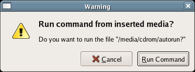
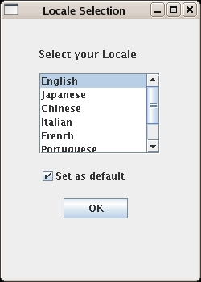
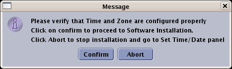
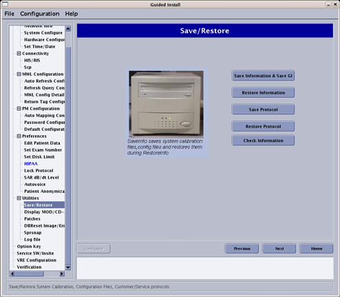
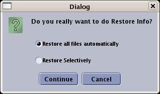
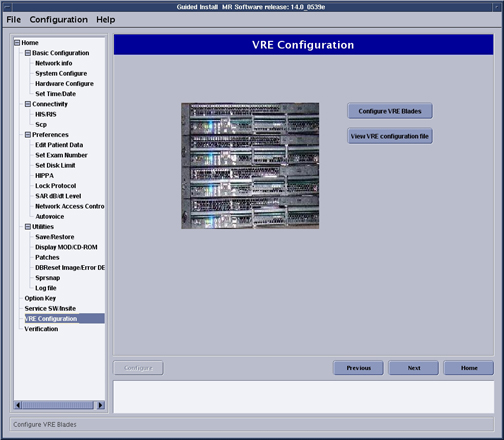
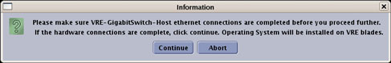
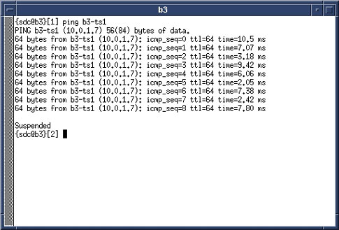
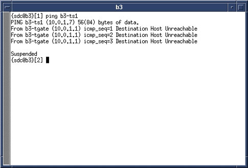

Operating Documentation
Direction 5670000, Rev# 1
Optima MR450w 1.5T Service Methods
Module Version 14.0, Version Date 5/20/09
Operating Documentation |
| Required Persons | Preliminary Reqs | Procedure | Finalization |
|---|---|---|---|
| 1 | Not Applicable | 1.5 hours | Not Applicable |
This document provides instructions for setting up host system software. It includes:
| Item | Qty | Effectivity | Part# | Manufacturer | |
|---|---|---|---|---|---|
| Service Methods DVD | 1 | - | - | - | |
| Item | Qty | Effectivity | Part# | Manufacturer |
|---|---|---|---|---|
| HDv Linux OS Software DVD | 1 | - | - | - |
| HDv MR Applications DVD | 1 | - | - | - |
| Restricted Service DVD | 1 | - | - | - |
| Condition | Reference | Effectivity |
|---|---|---|
If this is not a new installation, perform a SaveInfo of all system settings before beginning the software installation. | - | - |
When conducting a software reinstallation, write down all the IIP configuration data to speed up the InSite process. (It is not saved as part of the SaveInfo procedure.) The data can be accessed from the Common Service Desktop → Configuration → Guided Install → FE Mode → Service SW → InSite → Config InSite IIP. Click on each IIP Configuration tab, and record the data. This data can be manually entered after the software application load. | - | - |
| ||||
The software load can be corrupted if the following conditions
are not met:
| ||||
Insert the HDv Linux OS Software DVD into the DVD-ROM drive of the host computer.
Reboot the host computer.
At the boot prompt, type GEHCMR
The OS software load takes about 13 minutes.
| NOTE: | As the install begins, it queries all physical drives in the system and builds/partitions all available devices. If the disk is not what the system expected, a warning indicating a bad disk may display. Software will fix during the install. Click [Ignore] to proceed with the install. |
After about 90 seconds, a progress message displays, indicating that the install image is being transferred. (See Illustration 1.)
Illustration 1: Transferring Install Image to Hard Drive

Two minutes later, an additional message displays indicating that the install process has begun. (See Illustration 2.)
Illustration 2: Starting Install Process

Once the installation is complete, ensure the disk is removed from the drive. Do not insert the Applications DVD at this time!
When the OS software is loaded, a Complete and Reboot screen (shown in Illustration 3) displays indicating that the system needs to be rebooted. Press <Enter> to reboot the PC.
Illustration 3: Complete and Reboot

When a terminal window displays after a couple of minutes, the OS software load is complete. Continue to the next section.
Insert the MR Applications DVD into the DVD drive of the Host computer.
When the Warning window (shown in Illustration 4) displays, click [Run Command] to confirm the run.
Illustration 4: Confirmation Window

The system begins partitioning the hard drives. A progress window displays. (See Illustration 5.)
Illustration 5: Disk Partitioning Screen

The system reboots automatically when the partitioning is complete. Do not interact with the system.
When the Locale Selection window (shown in Illustration 6) displays, select the proper locale and language, then click [OK].
Illustration 6: Select Location

The Guided Install screen will display. When the Message screen (shown in Illustration 7) displays indicating the improvements made from the previous software version, click [OK] to continue.
Illustration 7: Guided Install Upgrade Screen

When the Guided Install Configuration Media Dialog window displays, confirm the type of media to use to restore the Guided Install Configuration. (See Illustration 8.)
Illustration 8: Install Configuration Media Window

| ||||
| The last installed GUI configuration can only be installed if it was previously saved using [Save GI Configuration]. | ||||
Insert the Save Info DVD. Verify that the correct values are restored by checking each tab in the next step. Click [OK] to reinstall the last GUI installation configuration values.
The SaveInfo files are not restored at this point in the software load, but will be restored later.
If the GUI configuration was not saved, or the load is being performed for the first time, click [Cancel] to continue manually with the installation.
Select Basic Configuration tab shown in Illustration 9. Verify that all values under this tab are configured properly, including Time/Date.
If failures are noted, click on the failure, then click [Go to Tab].
If any parameter does not match the expected criteria, the values in the left column will be red. If everything is acceptable, all values remain black. A changed value is indicated in blue.
Illustration 9: Guided Install - Configuration Screen

If the Guided Install configuration was successfully restored from the DVD, it is not necessary to change any of the parameters.
Check the parameters on the Verification tab, and confirm there are no failures. If there are failures, make the necessary changes.
Make sure all required configuration tabs are filled out (not in any specific order) before continuing. The Verification tab lists any formatting errors as well as current settings.
Set Scan Range to proper value by selecting the System Configure option under the Basic Configuration option. If the length of the Magnet Room is less than 21.5 ft. (6.5 m), select [Short]. If the length is greater than 21.5 ft. (6.5 m), select [Long]. (See Illustration 10.)
Illustration 10: Guided Install - Scan Range

| ||||
| If loading software for the first time on a Host PC, the initial
boot up will fail. Manually enter the Term Server information on the
Network Info screen shown in Illustration 9. Example format: 20:2D:90:22:44. Use colons between two digits; letters are case sensitive. | ||||
Proceed to the Verification tab shown in Illustration 11.
Look for any items with a Fail status. Go to the tab with the error and correct it.
Click [Install] to open the Verification tab again.
| NOTE: | Failed entries are due to missing or incorrectly formatted entries. The [Install Software] button is inactive if there are failures. |
Illustration 11: Guided Install - Verification

If all entries pass verification at this point, click [Install Software] to begin the MR Applications load. If the time and time zone are correct, click [Confirm] to proceed. (See Illustration 12.)
Illustration 12: Confirming Local Time

| NOTE: | A Software Installation in Progress message will display. The MR Applications load will take 5-10 minutes, depending on the host PC. |
Once the MR Applications load is complete, a confirmation message (shown in Illustration 13) displays. Click [OK] to close the window.
Illustration 13: Guided Install - Software Installation Completed

| NOTE: | If the Run Warning message (shown in Illustration 4) displays, click [Cancel] to exit the auto run. |
The GUI returns to the Guided Install window. Under the Utilities tab in the left navigation, select Save/Restore to open the Save/Restore screen shown in Illustration 14.
If the DVD with the saved configurations is not available, go to each tab in the Install GUI and complete all system information manually. A [Help] button that provides information on the required data and its format is available on each tab.
Illustration 14: Save/Restore Screen

If the DVD with saved configurations is available, click [Restore Information], and select the proper media from the dialog box. (See Illustration 8.)
When the Restore Info Dialog box (shown in Illustration 15) displays, click [Restore all files automatically], then click [Continue].
Illustration 15: Restore Option Window

| NOTE: | If restoration fails, the DVD automatically ejects the media. Exit the Guided Install and allow the system to reboot. When the system restarts, return to the Guided Install and attempt to Restore Info again. |
A RestoreInfo in Progress window scrolls filenames as they are restored.
When the restoration is completed, an Update Utility message (shown in Illustration 16) displays.
Illustration 16: Guided Install - Update Utility Message

Click [OK] to open the Restore Manager dialog window shown in Illustration 17.
Illustration 17: Guided Install - Restore Utility

Select All to restore all items, and click [Update]. When the update is finished, click [Quit].
Click [Yes] when the Quit Tool message (shown in Illustration 18) displays.
Illustration 18: Quitting Restore Manager

The message shown in Illustration 19) confirms that a log file was created. Click [OK] to finish.
The MR Applications software load is now complete.
Illustration 19: Log File

Reboot the system, by selecting [Desktop] on the left corner of the monitor, then [Logout], then [Restart the computer], and then [OK].
Log in to the system as [root] (password is [operator])
Click [Yes] to start Guided Install.
Remove the MR Applications DVD.
Proceed to Loading and Configuring VRE Software.
From the Guided Install interface left navigation menu, select VRE Configuration.
When the VRE Configuration screen (shown in Illustration 20) displays, verify VRE Blades are properly installed and all hardware connections are in place, including Ethernet connections.
Illustration 20: VRE Configuration Screen

Click [Configure VRE Blades] shown in Illustration 20.
When the Information window (shown in Illustration 21) displays, click [Continue] to confirm that the VRE Gigabit Switch Ethernet and Host Ethernet connections (Illustration 22) are complete and correct.
Illustration 21: Confirm VRE Installation

Illustration 22: VRE Gigabit Switch and Host Ethernet Connections

When the VRE window asks for the number of connected VRE Blades, select the proper number of Image Compute Nodes (ICNs): 1 or 2, and click [OK].
The system needs to be configured for 1 or 2 ICNs. This procedure will take between 15-20 minutes depending on the number of ICNs (blades) in the system.
A VRE Configuration Progress Details window shown in Illustration 23 will display.
When VRE configuration is complete, a configuration Success message is displayed. Click [OK] to continue.
Illustration 23: VRE Configuration Progress Details

| NOTE: | If the VRE configuration fails, refer to VRE Troubleshooting. |
If the site has IRM (In Room Monitor), in the Guided Install window select IRM Installation and then select the [Install IRM Software] button. SeeIllustration 24.
Illustration 24: IRM Installation Screen

If this is the first or initial software load, perform a Term Server Reset by executing the following steps. Otherwise, proceed to Step 6.
Remove the power connector from the Term Server. (See Illustration 25.)
Illustration 25: Reset Term Server

Press and hold the small square Reset button (next to the power jack), and connect power to the Term Server while continuing to depress this button.
Continue depressing the Reset button for 20 seconds.
Verify communication between the Host PC and Term Server:
Open a C-shell terminal.
Ping the ts1 address by typing: ping hostname-ts1 (where hostname is the hospital name) and press <Enter>.
Proper communication should display as shown in Illustration 26.
Illustration 26: Ping ts1

If an improper response of Host Unreachable (shown in Illustration 27) displays, repeat the Term Server Reset procedure in Step 5.
Illustration 27: Communications Error Message

To stop the test, press <Ctrl-c>.
Select Quit from the File menu to exit the Guided Install interface.
When the Information window confirms that the configuration is complete, click [OK].
Remove the MR Applications DVD from the host computer, and then reboot the computer.
| NOTE: | It is acceptable to delay performing a system restart prior to loading Restricted Service software. For details on loading restricted or proprietary software, see Loading or Deleting Proprietary Software. |
| NOTE: | For installing the software using elicensing, refer to 2397845 Signa Software Option Install with eLicense. |
Load Service Software: Loading or Deleting Proprietary Software
Load Service Methods documentation: Installing Service Methods CD onto System
Load all applicable options.